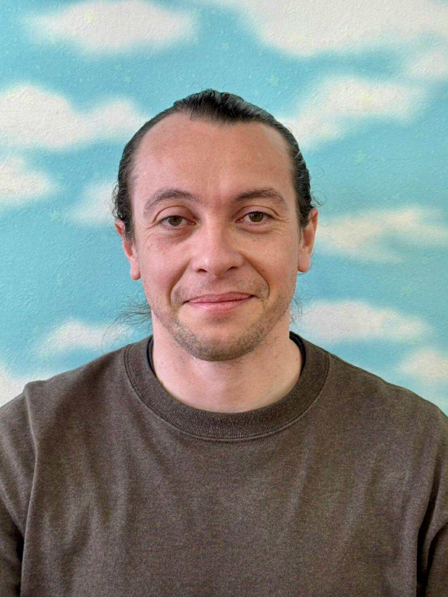

Guilherme Moraes Migotto
VilliDoug

Summary
I am a trilingual teacher working towards a new career in IT in Japan.
Education
-
Music Education, Universidade Metodista de Piracicaba (UNIMEP), 2010 - 2014.
-
Japanese Language Course, Chinzei University (formerly Nagasaki Wesleyan University), 2013 - 2014.
Work experience
-
Electric and acoustic guitar instructor
2010 - June 2014
- Taught over 40 students of various age groups and levels.
- Responsible for the "Guitar Quartet," introducing children to classical music.
- Prepared over 20 students for live concerts and rehearsals, how to handle pressure and social interactions.
-
English as a second language teacher
April 2015 - present
- Currently teach over 250 students weekly, from pre-school up to business lessons.
- Experience in tailoring curriculum and developing material for each individual or group.
- Taught on-location at Sony, SUMCO, MELCO and many other schools around Nagasaki prefecture.
- Recently, long time student of nearly 10 years has been accepted in over 6 universities in the United States.
Skills
- Communication skills
- Brazilian Portuguese (native), English (native level)
- Japanese (fluent conversation, business level)
- HTML, CSS, Java, Spring Boot, MySQL, TypeScript, React, Next.js, Git/GitHub
Certifications, other achievements
- TOEIC, 950 score (2012).
- Japanese Proficiency Language Test - JLPT, N2 (Jan 2026).
Miscellaneous
- Volunteer instructor at Carpe Diem Brazilian Jiu-jitsu, Nagasaki - Isahaya.
- Work in specialized logging as a groundworker.
- My Hobbies
Personal links
©VilliDoug 2026. All rights reserved